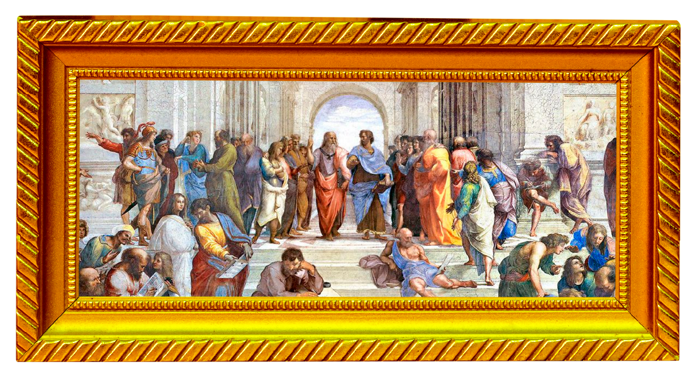
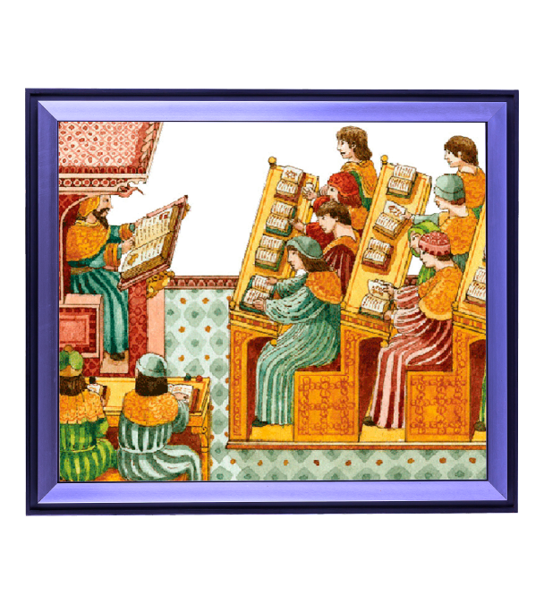
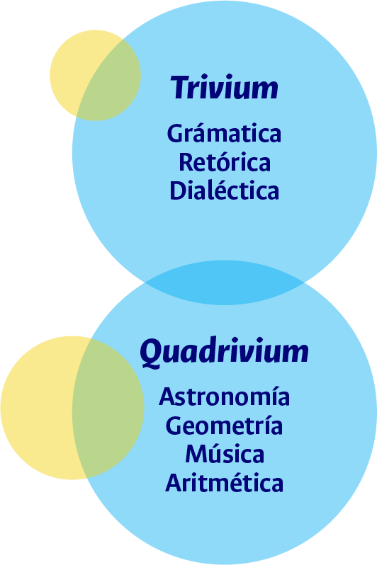

Antigua Roma
Cursus honorum: suma de honores de una persona a lo largo de la vida.
Antigua Grecia
Nacimiento de las artes liberales en oposición a las artes serviles. Trivium: gramática, dialéctica, retórica. Cuadrivium: aritmética, geometría, astronomía y música.
Edad Media
Consolidación de las siete artes liberales y organización de los contenidos escolares
Escocia (Siglo XVII)
El primer registro de la palabra “currículo” en un contexto educativo se dio en 1633 en la Universidad de Glasgow. En esta institución, el diseño curricular guardaba relación con las formas de organización del trivium y el cuadrivium, que nacieron en la antigua Grecia.


Menú
Espiral del tiempo: currículo y teorías curriculares